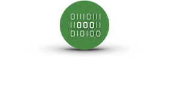

Protect User Accounts& Data WhenEverything Else Fails
Even if a user account is hacked, information encrypted by Cyphlens remains available to the user and inaccessible to the attacker.

Partial EncryptionOf DocumentsWebpages & More
Encrypt only the sensitive parts of a document or webpage and enable different access levels deciding who has access to what parts.

Easy & IntuitivePoint-to-DecryptUser Experience
Just point your phone camera at the encrypted content in order to see the underlying sensitive information, if authorized to do so.

Easy IntegrationAnd EffortlessOnboarding
Integration with our backend REST API is rapid and effortless. Discover the full power of Cyphlens with just a few API calls.